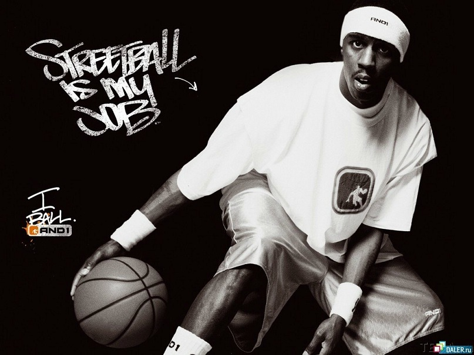

спортивная командная игра с мячом, в которой мяч забрасывают руками
в кольцо соперника. Для баскетбола нужен мяч(Кожа, резина)
В баскетбол играют две команды, каждая из которых состоит из пяти полевых игроков
(замены не ограничены).
Цель каждой команды — забросить мяч в кольцо с сеткой (корзину) соперника и помешать
другой команде завладеть мячом и забросить его в свою корзину.
Корзина находится на высоте 3,05 м от паркета
(10 футов). За мяч, заброшенный с ближней и средней дистанций, засчитывается два очка, с дальней
(из-за трёхочковой линии) — три очка; штрафной бросок оценивается в одно очко.
Стандартный размер баскетбольной площадки — 28 м в длину и 15 м — в ширину.
Баскетбол — один из самых популярных видов спорта в мире.
Стритбол

Стритбол
вид баскетбола, появившийся в США в 1950-х годах в бедных городских кварталах.
От обычного баскетбола отличается количеством игроков — их 3, и зоной игры — половиной баскетбольного
игрового поля c единственным кольцом.
Что касательно стритбольной площадки - каждый корт должен удовлетворять следующим требованиям:
Иметь ровную плоскую поверхность, покрытую асфальтом или другим материалом, пригодным для игры.
Иметь разметку, нанесенную белой краской в соответствии со схемой
Классические правила 3x3 Ассоциации уличного баскетбола (2016) RU / EN Правила
«Стритбаскет-Россия» действуют на массовых турнирах под эгидой ассоциации. Игры проводятся по официальным
правилам баскетбола 3x3 и ФИБА для мужчин и женщин, идентичные правилам баскетбола ФИБА со следующими исключениями
и комментариями: